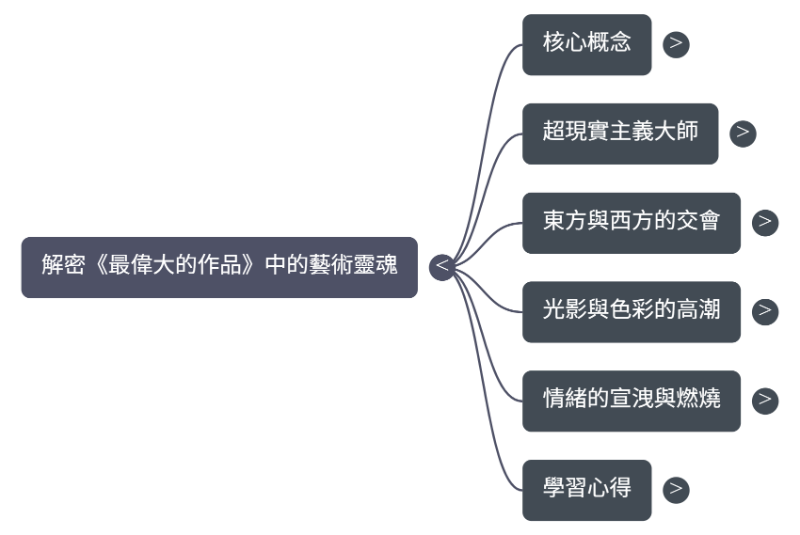

大二上期末資料 <<
Previous Next >> RTET 看這邊
藝術史
感謝老師願意到我的網站逛逛~
以下是這次期末報告的內容，建議老師在網頁上觀看才能獲得最佳體驗窩~
周昀融 設計的 【聽見畫布的聲音：解密《最偉大的作品》中的藝術靈魂】
一、 創作發想 (About Project)
「哥穿著復古西裝，拿著手杖彈著魔法樂章...」
本專題以周杰倫的歌曲《最偉大的作品》為靈感地圖，嘗試將流行音樂轉化為一把開啟西洋藝術史的鑰匙。我不只是分析畫作，更試圖解讀這些跨越百年的經典，如何回應現代大學生的焦慮、孤獨與夢想。
透過 AI 技術輔助腳本與視覺生成，影片依序拜訪了五位藝術大師。從馬格利特的偽裝哲學出發，經過達利的夢境與常玉的鄉愁，在馬諦斯的色彩中療癒，最後在梵谷的星夜裡燃燒。這是一段從「聽覺」到「視覺」，最終回歸「心靈」的完整旅程。
二、 影片欣賞 (Video)
影片架構

三、 內容解析：五站藝術之旅 (The 5 Artists)
本影片依照歌詞敘事順序，精選五幅畫作進行深度解讀：
-
第一站：馬格利特 (René Magritte)
-
第二站：達利 (Salvador Dalí)
-
第三站：常玉 (Sanyu)
-
第四站：莫內 (Claude Monet)
-
第五站：孟克 (Edvard Munch)
四、 學習心得與反思 (Reflection)
這學期的藝術史課程對我而言，是一次視角的轉換。以前看畫，我只會看「畫得像不像」，但透過老師介紹的私房藝術地圖，我開始理解每個流派背後的時代精神。
特別是這次透過《最偉大的作品》進行專題製作，讓我明白藝術並不是掛在博物館裡冷冰冰的文物，而是可以與流行文化、與我當下的情緒產生共鳴的鏡子。從馬格利特的哲學思辨到梵谷的情感宣洩，我學會了在藝術中尋找自我投射。這堂課學到的不只是藝術知識，更是一種細膩觀察世界與同理他人情感的能力。
五、 技術應用 (Tech Stack)
為了呈現「時空穿越」的視覺效果，本專案運用了以下工具：
大二上期末資料 <<
Previous Next >> RTET 看這邊